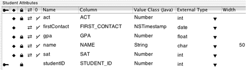

The application in the basic tutorial uses a rather simple data model that offers little opportunity to customize applications that use it. A more advanced model will better demonstrate the customization features of Direct to Java Client. Since you'll be modifying the model, however, it's kept rather simple so you won't have to spend too much time editing it.
Open the Admissions.eomodeld file
from within the Admissions project. Add these attributes to the
Student entity:
act;
Column: ACT; External Type: int;
Internal Data Type: Integer.sat; Column:
SAT; External Type: int;
Internal Data Type: Integer.firstContact;
Column: FIRST_CONTACT; External Type: date;
Internal Data Type: Date.
Don't lock on this attribute: Deselect the lock icon in the attribute's
row.Make all the new attributes client-side class properties. By default, they should also be set as server-side class properties, so make sure the diamond icon is present for all the new attributes.
Since you added attributes to the entity, you must synchronize the model and the database schema that generates the appropriate SQL for the updated entity. Refer to "Using the Application" and Figure 3-17 for a reminder.
The Student entity should now resemble Figure 5-1.
Figure 5-1 The updated Student entity
